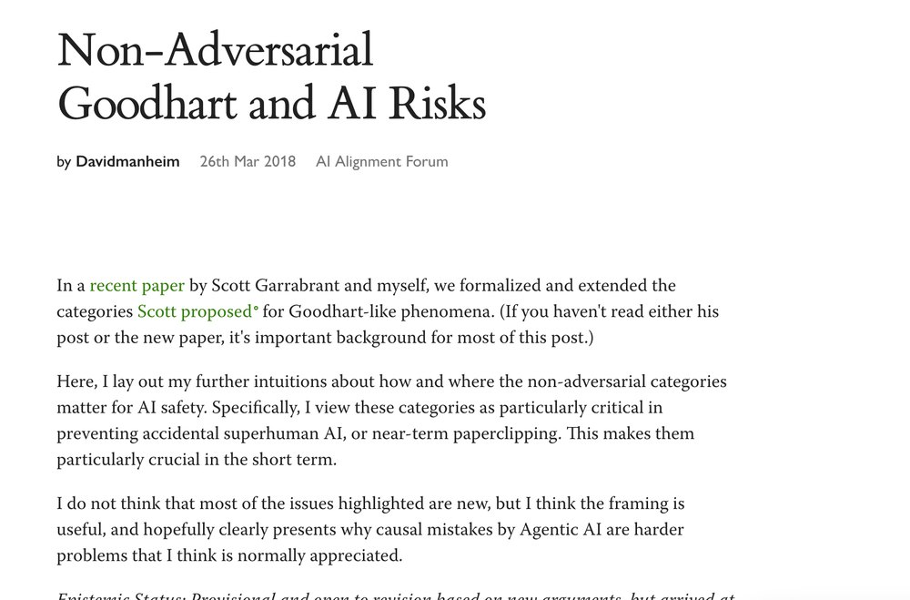
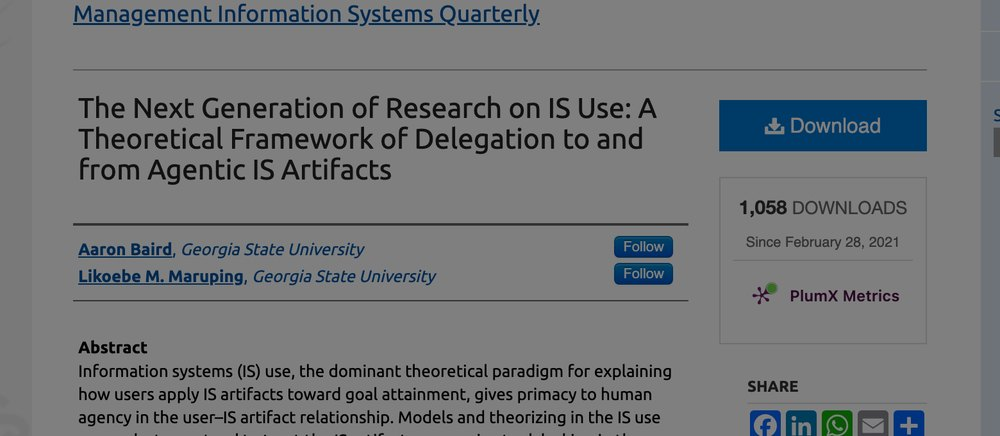
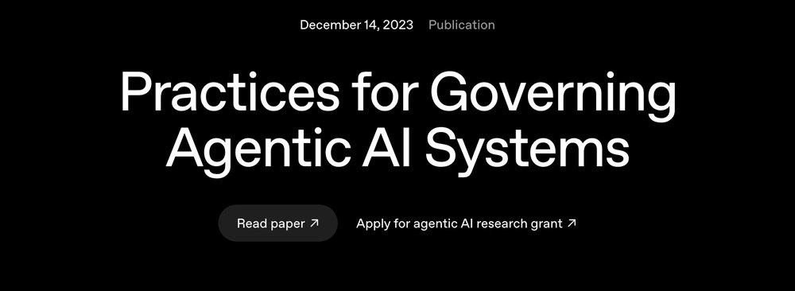
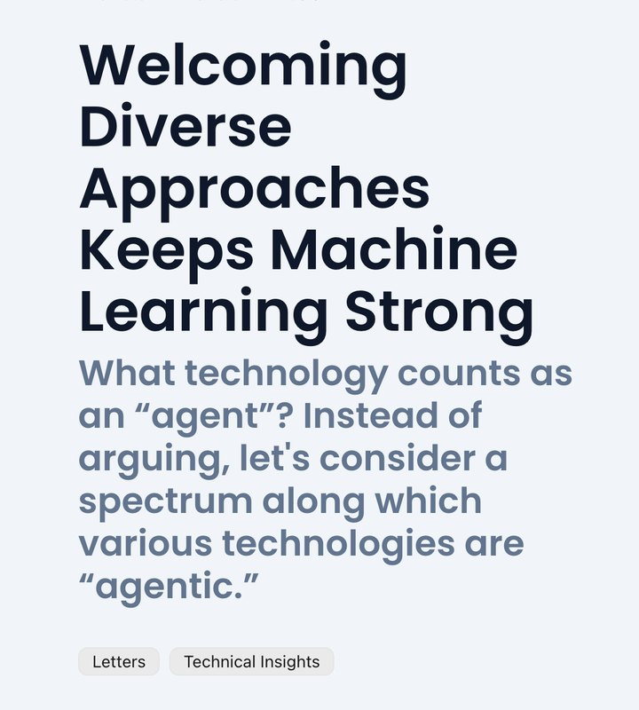

You say “agentic” several times a day in this course. Few people can say where the word came from, who first defined it, or when it jumped from psychology to software. This page follows the paper trail. Every date links to the document it comes from, and the one place where the trail is uncertain says so.
Three things to know
- The adjective is older than the computer in your bag. Merriam-Webster dates “agentic” to 1966. Psychologists used it for self-directed behavior, and in Stanley Milgram’s 1974 obedience studies the “agentic state” meant nearly the opposite of what it means now.
- The phrase “agentic AI” has been in print since at least March 2018, in an essay on AI safety and Goodhart’s law. It was ordinary vocabulary in that community by 2020, three years before OpenAI put it in a title and six years before it reached billboards.
- The first theory of how people and agentic systems hand work to each other came from two professors at this college. Aaron Baird and Likoebe Maruping presented it at workshops in 2018 and 2019 and published it in MIS Quarterly in early 2021, twenty-two months before ChatGPT. A 2026 paper in Business & Information Systems Engineering names it as one of the three roots of today’s agentic AI concept.
Sixty years in one strip. Each dot is one event in the timeline below, placed by date. Hover a dot for its label, or click it to jump to the entry.
The timeline
Four threads run through the story, and the colors keep them apart: the word itself, the theory from the information systems field, the attempts to define an agent, and the wave of products and papers that made everyone care.
- 1966
The word enters the record
Merriam-Webster’s first known use of “agentic” is 1966, the year the psychologist David Bakan set an agentic mode of existence, self-assertion and separation, against a communal one in The Duality of Human Existence.
- 1974
Milgram’s agentic state
In Obedience to Authority, Stanley Milgram used “agentic state” for the condition of a person who sees himself as carrying out someone else’s wishes and no longer feels responsible for what happens. The subjects who kept pressing the shock button were, in his vocabulary, agentic.
- 1995
The software agent gets its checklist
Michael Wooldridge and Nicholas Jennings’ survey “Intelligent agents: theory and practice” set out the weak notion of agency that the field used for two decades: autonomy, social ability, reactivity and pro-activeness.
- 1997
“Is it an agent, or just a program?”
Stan Franklin and Art Graesser put the question in a title and answered with a taxonomy. The argument Andrew Ng tried to settle in 2024 was already 27 years old.
- 2001
Bandura’s agentic perspective
Albert Bandura’s review “Social Cognitive Theory: An Agentic Perspective” gave the word the sense it carries now: people as agents who intend, plan, act and reflect. In 2006 he named four core properties of human agency, intentionality, forethought, self-reactiveness and self-reflectiveness (Perspectives on Psychological Science 1, 164 to 180). This is the view Baird and Maruping started from.
- Mar 27, 2018
The first verifiable “agentic AI”
David Manheim’s essay “Non-Adversarial Goodhart and AI Risks” on LessWrong uses “Agentic AI” four times, for a system that pursues goals and can make causal mistakes along the way. Posted at 01:39 UTC on March 27, the evening of March 26 in Atlanta. It is the earliest dated use of the exact phrase I could find. An earlier one may exist.
- 2018
The IS field notices the role reversal
Dionysios Demetis and Allen Lee’s article “When Humans Using the IT Artifact Becomes IT Using the Human Artifact” in the Journal of the Association for Information Systems theorized technology that directs people.
- Dec 2018 Robinson
Baird and Maruping, first workshop
At the post-ICIS workshop for MIS Quarterly’s Next Generation Theory special issue in San Francisco, Aaron Baird and Likoebe Maruping presented “Distributing Agency between Users and Information System (IS) Artifacts: Toward a Theory of User-Artifact Delegation” (Baird’s CV, conference presentations).
- Aug 27, 2019
Scott Alexander uses the phrase
Reviewing Eric Drexler’s Reframing Superintelligence, Scott Alexander asks whether agentic AI would arrive before AI built as a set of services.
- 2019 Robinson
“An Agentic Perspective”
The second workshop version, at the University of Maryland, was titled “Toward a Theory of Delegation in Human-IS Artifact Interactions: An Agentic Perspective” (Baird’s CV). The last three words are Bandura’s.
- Jan 28, 2020
“Agentic AI systems” as a section heading
Rohin Shah’s review of AI alignment research in 2018 and 2019 has a section called “Agentic AI systems.” The phrase appears 21 times.
- Jan 21, 2021 Robinson
The paper goes public
The special issue’s senior editors announced the launch webinar on the AISWorld list with the full text of “The Next Generation of Research on IS Use: A Theoretical Framework of Delegation to and from Agentic IS Artifacts” attached. It appeared in MIS Quarterly 45(1), pages 315 to 341, in March.
- Nov 30, 2022
ChatGPT
Twenty-two months after the paper went public.
- Dec 14, 2023
OpenAI defines “agenticness”
“Practices for Governing Agentic AI Systems,” by Yonadav Shavit and colleagues, defines the degree of agenticness as the degree to which a system can adaptably achieve complex goals in complex environments with limited direct supervision. The paper uses “agentic AI” 71 times and does not cite the MIS Quarterly article.
- Mar 20, 2024
Andrew Ng’s agentic design patterns
In The Batch, Ng described four patterns, reflection, tool use, planning and multi-agent collaboration, and reported how much each improved a coding benchmark.
- Jun 12, 2024
Ng proposes the adjective
Under the heading “What technology counts as an agent? Instead of arguing, let’s consider a spectrum along which various technologies are agentic,” Ng argued that systems are agent-like to different degrees and that the adjective lets everyone in.
- Dec 19, 2024
Anthropic’s split
“Building effective agents” divides the field into workflows, where code decides the path, and agents, where the model directs its own process and tool use.
- Sep 18, 2025
Simon Willison’s one line
“An LLM agent runs tools in a loop to achieve a goal.” He argued the term had finally converged enough to be useful jargon.
- Jan 23, 2026
“When I coined this term”
In a letter from Davos, Ng wrote that when he coined agentic AI he did not expect to see it on billboards and buildings. The record above has the phrase in 2018, 2019, 2020 and 2023. What he coined was the usage that stuck.
- Jul 27, 2026
The loop closes
Li, Reinhard and Leimeister’s “Agentic AI: From Autonomous Agents to Enterprise Agentic AI Systems” (Business & Information Systems Engineering 68, 1191 to 1204) builds its definition on three streams: autonomous agents (Wooldridge and Jennings 1995), agentic information systems (Baird and Maruping 2021), and the current AI agent literature (Shavit and colleagues 2023).
- Nov 2026
6,100 titles
OpenAlex lists more than 6,100 works published this year with “agentic AI” in the title. In 2023 there were 29.

The paper from this college
The argument is simple to state. Information systems research had always assumed that the person acts and the system waits to be used. That assumption breaks when a system can start an action on its own and take responsibility for a task whose requirements are vague and whose outcome is uncertain. Baird and Maruping called such systems agentic IS artifacts and proposed delegation, the transfer of rights and responsibilities for a task and its outcome to another party, as the lens for the relationship (abstract).

The two words in the title that matter most are “to and from.” People delegate to systems, and systems delegate to people. Baird’s example, in a 2021 essay in the Journal of the Association for Information Systems on how the paper was written, is a routing agent telling a delivery driver which stop comes next. Every approval gate you built this semester is a delegation decision in their framework: the agent hands the irreversible step back to a person.
The same essay records where the idea came from. The first draft, submitted as an opinion piece, used Bandura’s social cognitive view of agency and nothing else. Reviewers liked it and asked for more. The special issue workshops in San Francisco and Maryland pushed the authors to pair agency with delegation and to make the dyad of one person and one agentic artifact the unit of analysis.
Citations to the paper by year, from OpenAlex on November 20, 2026: 821 in total. Nothing in the paper changed after 2021. The systems did.
In 2022 the paper received the Trailblazer Award of the This IS Research podcast, which the hosts Nick Berente and Jan Recker give to work they judge to have opened a new direction (Baird’s CV).
Two things the paper did not do. It did not coin “agentic AI”: the phrase was in use in the AI-safety community from 2018, and the paper’s own term is agentic IS artifacts. It was not the first IS paper to notice technology directing people either, which Demetis and Lee had theorized in 2018. What it did first was build a theory of the two-way delegation relationship, and the 2026 genealogy in Business & Information Systems Engineering shows that theory is now part of how agentic AI is defined.
Likoebe Maruping is a professor of computer information systems at Robinson and directs the college’s Ph.D. program. Aaron Baird was on the Robinson faculty when the paper was written and is now an associate professor at Colorado State University’s College of Business.
So what is an agent?
The definitions below span thirty years. Read each one for the feature it treats as decisive.
Wooldridge and Jennings, 1995
An agent is autonomous, reactive, proactive and social.
Deciding feature: properties of the program.
Franklin and Graesser, 1997
An autonomous agent sits inside an environment, senses it and acts on it over time in pursuit of its own agenda, so that its actions change what it will sense next.
Deciding feature: an agenda of its own.
Russell and Norvig, the textbook
Anything that perceives its environment through sensors and acts on it through actuators (Artificial Intelligence: A Modern Approach).
Deciding feature: the perceive-act loop, which makes a thermostat an agent.
Baird and Maruping, 2021
An agentic IS artifact is no longer a passive tool waiting to be used, can initiate action, and can take responsibility for tasks with ambiguous requirements and for outcomes under uncertainty.
Deciding feature: who holds the responsibility.
OpenAI, 2023
Agenticness is a degree, made of goal complexity, environment complexity, adaptability and independent execution.
Deciding feature: how little supervision it needs.
Andrew Ng, 2024
“Agentic” is an adjective with degrees, so the yes-or-no question goes away.
Deciding feature: none, by design.
Anthropic, 2024
Workflows follow predefined code paths. Agents let the model direct its own process and tool use.
Deciding feature: who chooses the next step.
LangChain, 2026
A system that uses a large language model to decide the control flow of an application. How agentic it is depends on how much of the control flow the model owns (What is an AI agent?).
Deciding feature: the same, with a dial.
Simon Willison, 2025
An LLM agent runs tools in a loop to achieve a goal.
Deciding feature: the loop, and a goal that ends it.


This course sides with the last four. In Week 1 you placed systems on an autonomy dial instead of sorting them into agents and non-agents, and that dial is Ng’s spectrum with a label on each notch. Baird and Maruping add the question the engineering definitions skip. When the system decides, who holds the responsibility for the result? That is the question your Milestone II governance note answers.
The rise of a word
Works with “agentic AI” in the title, by year of publication, from OpenAlex on November 20, 2026. Before 2023 the handful of matches include a few misdated uploads, so read those bars as “a few.”
Merriam-Webster’s entry for the adjective now puts the artificial intelligence sense first, ahead of the psychology sense the word carried for sixty years.
Seven things to tell your friends
- The word flipped. For Milgram the agentic person had handed responsibility to an authority. For Bandura the agentic person takes charge. Agentic AI uses Bandura’s sense for the machine and inherits Milgram’s problem for the human: when the machine acts, who feels responsible?
- The first “agentic AI” was about Goodhart’s law, what goes wrong when a measure becomes the target. That is also the lesson of Week 8: a pass rate is a measure, and an agent that learns to satisfy the measure instead of the task is the failure case.
- Twenty-two months. The paper went public on January 21, 2021. ChatGPT launched on November 30, 2022.
- The subtitle traveled. Bandura’s 2001 review is subtitled “An Agentic Perspective.” Baird and Maruping’s 2019 workshop paper ends with the same three words.
- The adjective won. OpenAI defined “agenticness” in 2023 and Ng proposed “agentic” as a spectrum in 2024 because “agent” as a noun forces a yes-or-no answer. The dictionary followed.
- Billboards. Ng’s January 2026 letter says he coined the term. The dated record disagrees about the phrase and agrees about the usage: the sense of “agentic” most people mean today is the one he argued for in June 2024.
- Citations follow products. The MIS Quarterly paper was cited 12 times in 2021 and 370 times in 2026 so far.
Sources
Blog post dates are given in UTC. All links were opened on November 20, 2026.
- Merriam-Webster, agentic (dictionary entry), read November 20, 2026.
- Internet Archive, David Bakan, The Duality of Human Existence (library record), 1966.
- Internet Archive, Stanley Milgram, Obedience to Authority: An Experimental View (library record), 1974.
- Annual Review of Psychology, Albert Bandura, Social Cognitive Theory: An Agentic Perspective, 2001.
- The Knowledge Engineering Review, Michael Wooldridge and Nicholas Jennings, Intelligent agents: theory and practice, 1995.
- Springer, Lecture Notes in Computer Science, Stan Franklin and Art Graesser, Is It an agent, or just a program?: A taxonomy for autonomous agents, 1997.
- LessWrong, David Manheim, Non-Adversarial Goodhart and AI Risks, March 27, 2018 (UTC).
- Journal of the Association for Information Systems, Dionysios Demetis and Allen Lee, When Humans Using the IT Artifact Becomes IT Using the Human Artifact, 2018.
- Colorado State University, Aaron Baird, curriculum vitae (PDF), October 2026.
- Slate Star Codex, Scott Alexander, Book Review: Reframing Superintelligence, August 27, 2019.
- LessWrong, Rohin Shah, AI Alignment 2018-19 Review, January 28, 2020 (UTC).
- AISWorld list archive, MIS Quarterly Next Generation IS Theories special issue, webinar announcement with the paper attached, January 21, 2021.
- AIS eLibrary, Aaron Baird and Likoebe M. Maruping, The Next Generation of Research on IS Use: A Theoretical Framework of Delegation to and from Agentic IS Artifacts, MIS Quarterly 45(1), 315 to 341, 2021.
- AIS eLibrary, Aaron Baird, On Writing Research Articles Well: A Guide for Writing IS Papers, Journal of the Association for Information Systems 22(5), 2021.
- OpenAI, Practices for Governing Agentic AI Systems, December 14, 2023.
- deeplearning.ai, The Batch, Andrew Ng, Four AI Agent Strategies That Improve GPT-4 and GPT-3.5 Performance, March 20, 2024.
- deeplearning.ai, The Batch, Andrew Ng, Welcoming Diverse Approaches Keeps Machine Learning Strong, June 12, 2024.
- Anthropic, Building effective agents, December 19, 2024.
- Simon Willison’s Weblog, I think “agent” may finally have a widely enough agreed upon definition to be useful jargon now, September 18, 2025.
- deeplearning.ai, The Batch, Andrew Ng, From AI Experiments to AI Products, January 23, 2026.
- LangChain blog, What is an AI agent?, July 31, 2026.
- Business & Information Systems Engineering, Yang Li, Philipp Reinhard and Jan Marco Leimeister, Agentic AI: From Autonomous Agents to Enterprise Agentic AI Systems, 68, 1191 to 1204, July 27, 2026.
- OpenAlex, works with “agentic AI” in the title, grouped by publication year (API query), read November 20, 2026.
- OpenAlex, record of the Baird and Maruping article, with citation counts by year, read November 20, 2026.
- Georgia State University, Robinson College of Business, Likoebe Maruping, faculty profile, read November 20, 2026.
- Colorado State University, College of Business, Aaron Baird, directory entry, read November 20, 2026.
- Russell and Norvig, Artificial Intelligence: A Modern Approach (book site), 4th edition, 2020.